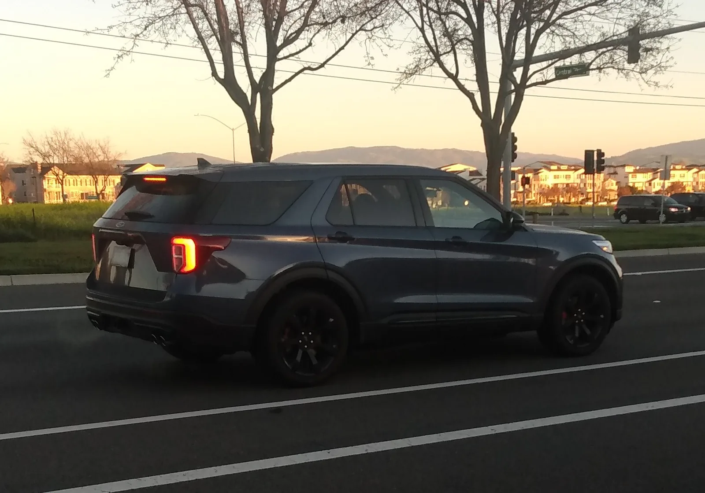

▲ 트레일호크는 4xe 대신 2.0리터 허리케인 터보를 얹는다 ⓒ Wikimedia Commons
지프가 그랜드 체로키 트레일호크를 되살렸습니다. 가격은 5만3,000달러입니다.
엔진이 바뀌었습니다. 4xe 플러그인 하이브리드 대신 2.0리터 허리케인 터보 4기통이 들어갑니다. 324마력, 332lb-ft입니다.
오프로드 장비는 확실합니다. 다만 값이 경쟁 모델보다 비쌉니다.
1. 트림 구성부터
| 트림 | 가격 | 성격 |
|---|---|---|
| 라레도 | 39,520달러 | 기본 |
| 업랜드 | 47,995달러 | 신규 트림, 265/60 올터레인 |
| 트레일호크 | 53,000달러 | 오프로드 |
| 오버랜드 | 55,900달러 | 고급 |
트레일호크와 오버랜드의 차이가 2,900달러입니다. 오프로드 사양과 고급 사양이 거의 같은 값에 놓입니다. 구매자에게는 성격이 명확히 갈리는 선택이 됩니다.
2. 4xe를 빼고 4기통을 넣었다
| 구분 | 기존 4xe | 2027 트레일호크 |
|---|---|---|
| 형식 | 플러그인 하이브리드 | 2.0L 허리케인 터보 4기통 |
| 출력 | — | 324마력 / 332lb-ft |
| 전기 주행 | 가능 | 불가 |
| 복합 연비 | — | 22mpg (4WD) |
오프로드 트림에서 PHEV를 빼는 것은 합리적인 면이 있습니다.
| 항목 | 내용 |
|---|---|
| 중량 | 배터리 무게가 접근각·이탈각과 통과성에 불리하다 |
| 바닥 공간 | 배터리가 하부에 깔려 스키드 플레이트 설계가 까다롭다 |
| 도하 성능 | 고전압 부품의 침수 대응이 부담 |
| 충전 | 오지에서 충전 인프라가 없다 |
다만 324마력 4기통이라는 조합에는 물음표가 붙습니다. 보도에서 "스로틀 반응이 아쉽다"는 지적이 나온 이유입니다.
터보 4기통은 저회전에서 응답이 늦습니다. 오프로드에서는 정밀한 스로틀 제어가 중요한데, 터보 래그는 이 조작을 어렵게 만듭니다. 바위 구간에서 살짝 밀어야 할 때 갑자기 튀어나가는 상황이 생깁니다.
3. 오프로드 장비는 진짜다
| 장비 | 사양 | 의미 |
|---|---|---|
| 후륜 차동잠금 | 전자식, 기본 | 한쪽 바퀴가 떠도 구동력이 전달된다 |
| 트랜스퍼케이스 | 2단, 2.72:1 로우기어 | 저속에서 토크를 증폭한다 |
| 에어서스펜션 | 기본 | 차고를 올려 지상고를 확보한다 |
| 스키드 플레이트 | 다중 적용 | 하부 보호 |
| 타이어 | 기본 30.5인치 | 업랜드는 265/60 올터레인 |
| 지상고·각도 | 동급 최고 주장 | 구체 수치는 미공개 |
앞선 투싼 XRT 사례와 정확히 대비됩니다. 투싼 XRT는 스키드 플레이트와 휠 아치 가니시 같은 외관 요소만 확인됐고, 지상고와 사륜 기본 여부는 공개되지 않았습니다.
트레일호크는 반대입니다. 차동잠금장치와 2단 트랜스퍼케이스는 원가가 실제로 들어가는 부품입니다. 외관 패키지에서는 넣지 않습니다.
2.72:1 로우기어의 의미도 명확합니다. 저단 기어비를 쓰면 같은 엔진 회전수에서 바퀴가 천천히 돌면서 토크가 증폭됩니다. 급경사와 바위 구간에서 필요한 기능입니다.

▲ 전자식 차동잠금장치와 2단 트랜스퍼케이스는 원가가 실제로 들어가는 부품이다
4. 값이 비싼 게 문제다
| 모델 | 가격 | 차이 |
|---|---|---|
| 그랜드 체로키 트레일호크 | 53,000달러 | 기준 |
| 토요타 4러너 TRD 오프로드 | 50,290달러 | -2,710달러 |
| 포드 익스플로러 트레모 | 49,460달러 | -3,540달러 |
CarBuzz의 제목이 "익스플로러 트레모를 싸 보이게 만든다"인 이유입니다.
다만 단순 비교는 조심해야 합니다. 4러너는 바디온프레임 구조로 성격이 다르고, 익스플로러 트레모는 트레일호크만큼의 오프로드 하드웨어를 갖추지 않았습니다.
지프의 논리는 "장비값"입니다. 에어서스펜션과 전자식 차동잠금을 기본으로 넣으면 원가가 올라갑니다. 문제는 그 논리가 매장에서 통하느냐입니다.

▲ 포드 익스플로러 트레모는 4만9,460달러로 3,540달러 싸다
5. 연비가 발목을 잡는다
| 구분 | 수치 |
|---|---|
| 도심 | 20mpg (약 8.5km/L) |
| 고속도로 | 25mpg (약 10.6km/L) |
| 복합 | 22mpg (약 9.4km/L) |
보도는 "실주행 연비가 EPA 수치에 못 미쳐 실망스럽다"고 지적했습니다.
2.0리터 4기통을 넣은 이유 중 하나가 연비였을 텐데, 그 효과가 체감되지 않는다면 명분이 약해집니다. 무거운 SUV에 작은 터보 엔진을 넣으면, 실주행에서 엔진이 계속 부하를 받아 카탈로그 수치와 격차가 벌어지는 현상이 흔합니다.

▲ 지프는 오프로드 하드웨어를 기본에 넣는 대신 가격을 올리는 전략을 택했다
6. 정리
2027년형 지프 그랜드 체로키 트레일호크가 5만3,000달러에 나옵니다. 4xe PHEV 대신 2.0L 허리케인 터보 4기통(324마력·332lb-ft)을 얹었습니다.
오프로드 장비는 실질적입니다. 전자식 후륜 차동잠금장치와 에어서스펜션이 기본이고, 2단 트랜스퍼케이스는 2.72:1 로우기어를 씁니다. 견인은 최대 6,200파운드입니다.
문제는 가격입니다. 포드 익스플로러 트레모(4만9,460달러)와 토요타 4러너 TRD 오프로드(5만290달러)보다 비쌉니다. 보도는 "스로틀 반응이 아쉽다"는 점과 실주행 연비가 EPA 수치(복합 22mpg)에 못 미친다는 점을 함께 지적했습니다.